Graphical FrontEnd¶
Graphical frontend for fitting photo-current spectra.
- class pypec.Analyse_PEC.Analyse_PEC(master=None)[source]¶
Construct a frame widget with the parent MASTER.
Valid resource names: background, bd, bg, borderwidth, class, colormap, container, cursor, height, highlightbackground, highlightcolor, highlightthickness, relief, takefocus, visual, width.
Methods
Update the number of cpu and run per process on the graphical interface.
AddFiles_cb
Fit_cb
ask_quit
autoscale
create_fit_lines
get_progress
on_Run_Fit
on_hv_limits
on_start_workers
on_stop_button
plot_Graph
plot_Re_Im
plot_fit_lines
plot_ligne_V
prm_binary
process_queue
remove_fit_folder
remove_fit_lines
start
update_figure
update_legend
update_nb_fit_in_run
- class pypec.Analyse_PEC.ParameterTable(master, prm, last_prm_folder, **kwargs)[source]¶
Construct a frame widget with the parent MASTER.
Valid resource names: background, bd, bg, borderwidth, class, colormap, container, cursor, height, highlightbackground, highlightcolor, highlightthickness, relief, takefocus, visual, width.
- class pypec.Analyse_PEC.ParameterWindow(master, prm_init, last_prm_folder)[source]¶
Construct a toplevel widget with the parent MASTER.
Valid resource names: background, bd, bg, borderwidth, class, colormap, container, cursor, height, highlightbackground, highlightcolor, highlightthickness, menu, relief, screen, takefocus, use, visual, width.
Methods
get_paths
get_prm
- class pypec.Analyse_PEC.ScrolledFrame(master, **kwargs)[source]¶
Construct a frame widget with the parent MASTER.
Valid resource names: background, bd, bg, borderwidth, class, colormap, container, cursor, height, highlightbackground, highlightcolor, highlightthickness, relief, takefocus, visual, width.
Iph Functions¶
Modules - Iph Functions
This module contains functions requiered for computing and optimizing the photo-current values from input parameters i.e. triplets 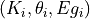 and experimental data for each semi-conductive phase [1].
- pypec.iph_functions.get_Iph_calc(hv, prm_array, phi_N)[source]¶
Compute the complex values of 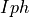 based on the values and states of the triplets [1].
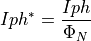
- Parameters:
- hv: 1d array
Vector of energies for which the complex has to be computed.
- prm_array: 2d array
Represents the values and states of the triplets .
- phi_N: 1d array
Represents the values of the normalized photon flux to the maximum value. If nphf is a unity vector, the true photo-current is returned otherwise the as-measured photo-current is returned.
- Returns:
- iph_calc_complex: 1d array
Vector of the computed complex values of .
- pypec.iph_functions.get_distance(iph_exp_complex, iph_calc_complex)[source]¶
Compute the distance
 between 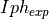 and
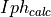.
The distance is computed by multiplying the distances on real and imaginary
parts of :
between 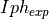 and
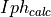.
The distance is computed by multiplying the distances on real and imaginary
parts of :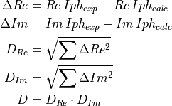
- Parameters:
- iph_exp_complex: 1d numpy array
Contains the complex values of the .
- iph_calc_complex: 1d numpy array
Contains the complex values of the .
- Returns:
- D: float
The computed distance on real and imaginary parts of :.
- pypec.iph_functions.get_exp_data(filepath)[source]¶
Get the data array of data files according to their extension.
Supported files are .dot files recorded by PECLab software and .data files were the first three columns represent
 , 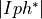,
, 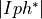,  .
.- Parameters:
- filepath: string
Path to the data file.
- Returns:
- data_array: 2d array
Experimental data.
Find the number of lines in header and footer in .dot files.
- Parameters:
- filepath: path to the dot file
- Returns:
- skip_header: int
number of lines in header
- skip_footer: int
number of lines in footer
- nbpoints: int
number of data lines
- pypec.iph_functions.get_random_prm_values(prm_array, K_bound=(1e-12, 0.1), theta_bound=(-180.0, 180.0), Eg_bound=(0.1, 6.2), phase_flag=True)[source]¶
Generates random values for the triplets to be fitted based on the states given by the prm_array.
By default, the limits are:
 : 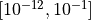
: 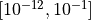 : 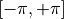
: 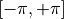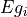: 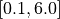
- Parameters:
- prm_array: 2d array
Represents the values and states of the triplets .
- K_bound:tuple
Contains the lower and upper limits for the
values.- theta_bound: tuple
Contains the lower and upper limits for the
values.- Eg_bound:tuple
Contains the lower and upper limits for the values.
- phase_flag: bool
Indicates if the values of
have to be randomized.
- Returns:
- random_prm_array: 2d array
Represents the values and states of the triplets .
- pypec.iph_functions.get_results_array(hv, iph_exp_complex, iph_calc_complex)[source]¶
Build the data array of the experimental and calculated data:
,
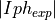, 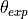, 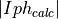 and 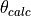- Parameters:
- hv: 1d numpy array
Contains the energy vector.
- iph_exp_complex: 1d array
Contains the complex values of .
- iph_calc_complex: 1d array
Contains the complex values of .
- Returns:
- data_array: 2d array
Array containing the .
- pypec.iph_functions.get_summary(fit_folder)[source]¶
List result files for the triplets at the end and the minimum of each run.
Compute the distance, the LCCs for the energy interval that was used for minimizing the the triplets .
The results are saved in 4 files: .SumEnd, .SumEndEg, *.SumMin, *.SumMinEg.
- Parameters:
- fit_folder: string
Path of the fit folder.
- pypec.iph_functions.import_prm_file(filepath)[source]¶
Import the triplets from text file where each line represents a contributing semi-conductive phase.
- Parameters:
- filepath: string
Absolute or relative file path to the text file.
- Returns:
- prm_array: 2d array
Represents the values and states of the triplets .
- pypec.iph_functions.minimize(hv, iph_exp_complex, phi_N, weights, prm_array, Ki_log_flag=True, maxiter=None, maxfun=None, xtol=1e-11, ftol=1e-23, full_output=True, retall=False, disp=False, callback=None)[source]¶
Execute the Nelder-Mead algorithm based on parameter values given by
prm_arrayand energy vector.First, the
prm_arrayis flattened and the parameters to be fitted are extracted and sent to the
to be fitted are extracted and sent to the target_function()through the Nelder-Mead algorithm.Once the parameters were computed by the Nelder-Mead algorithm,
the prm_arrayis updated with the new values.- Parameters:
- hv: 1d numpy array
Contains the energy vector.
- iph_exp_complex: 1d numpy array
Contains the complex values of the experimental photo-current.
- phi_N: 1d array
Contains the normalized photon spectrum.
- weights: 1d array
Contains the weights of the data.
- prm_array: 2d array
Represents the values and states of the triplets .
- Ki_log_flag: bool
Indicates if the
values are in logarithmic space.- maxiterint, optional
Maximum number of iterations to perform.
- maxfunnumber, optional
Maximum number of function evaluations to make.
- xtolfloat, optional
Relative error in xopt acceptable for convergence.
- ftolnumber, optional
Relative error in func(xopt) acceptable for convergence.
- full_outputbool, optional
Set to True if fopt and warnflag outputs are desired.
- retallbool, optional
Set to True to return list of solutions at each iteration.
- dispbool, optional
Set to True to print convergence messages.
- callbackcallable, optional
Called after each iteration, as callback(xk), where xk is the current parameter vector.
- Returns:
- prm_array: 2d array
Represents the updated values and states of the triplets .
- foptfloat
Value of function at minimum:
fopt = func(xopt).
- pypec.iph_functions.plot_summary(fit_folder)[source]¶
Plot the result files that were created by the
get_summary()for he triplets at the end and the minimum of each run.The results are saved in 2 files: -0-End.pdf, -0-Min.pdf.
- Parameters:
- fit_folder: string
Path of the fit folder.
- pypec.iph_functions.save_pdf(filepath, hv, iph_exp_complex, iph_calc_complex, mask, all_results)[source]¶
- pypec.iph_functions.save_results(run, process_id, fit_folder, datafilepath, suffix, hv, mask, iph_exp_complex, phi_N, prm_min_run, prm_end_run, distance_min_run, distance_end_run, minimization_results, header_minimization_results)[source]¶
- pypec.iph_functions.shift_phase(prm_array, theta_bound=(-180.0, 180.0))[source]¶
Compute the modulo of
values with  and then
shift the values of by the amplitude of the boundaries in order
to be in between the boundaries.
and then
shift the values of by the amplitude of the boundaries in order
to be in between the boundaries.By default, the boundaries for
are set to .- Parameters:
- prm_array: 2d array
Represents the values and states of the triplets .
- theta_bound: tuple
Contains the lower and upper limits for the :math`theta _i` values.
- Returns:
- prm_array: 2d array
Represents the values and states of the triplets where the
values were shifted.
- pypec.iph_functions.sort_prm_Eg(prm_array)[source]¶
Sort the
prm_arraybased on values of .- Parameters:
- prm_array: 2d array
Represents the values and states of the triplets .
- Returns:
- prm_array: 2d array
Represents the sorted values and states of the triplets .
- pypec.iph_functions.target_func(p, hv, prm_array, iph_exp_complex, phi_N, weights, Ki_log_flag=True)[source]¶
Update the triplets from the flattened parameter vector
psent by the optimization algorithm. Theprm_arraywill be flattened and the indexes of the parameters to be fitted will be updated withpvector.The calculated complex values of will be sent along the experimental values to the
get_distance()function. The value of the distance between the experimental and calculated data will sent back to the optimization algorithm.- Parameters:
- p: 1d array
Parameter vector sent by the optimization algorithm which is always. flattened.
- hv: 1d array
Vector of energies for which the complex values of have to be calculated.
- prm_array: 2d array
Represents the values and states of the triplets .
- iph_exp_complex: 1d numpy array
Contains the complex values of the experimental .
- phi_N: 1d array
Represents the values of the normalized photon flux to the maximum value.
- weights: 1d array
Contains the values of the data weights.
- Ki_log_flag: bool
Indicates if the
values are in logarithmic space.
- Returns:
- distance: float
Calculated distance between experimental and calculated data values. See the
get_distance()function.
- pypec.iph_functions.validate_prm(prm_array, K_bound=(1e-12, 0.1), Eg_bound=(0.1, 6.2))[source]¶
Check if the values of
and are within the boundaries.- Parameters:
- prm_array: 2d array
Represents the values and states of the triplets .
- K_bound:tuple
Contains the lower and upper limits for the
values.- Eg_bound:tuple
Contains the lower and upper limits for the values.
- Returns:
- valid: bool
Set to True if value of
or is out of the boundaries.
Parallel Processes¶
Module for controlling the parallel processes running during the fitting procedure
- class pypec.Parallel_Process.MinimizationProcess(output_queue, name, prm_init, nb_run, nb_SC, init_type, random_loops, hv, iph_exp_complex, iph_exp_complex_CI, phi_N, phi_N_CI, weights, hv_limits, nb_fit_in_run, fit_folder, filepath, suffix, NelderMead_options=(1e-11, 1e-23, 200, 200), ParameterConstraints=((1e-12, 0.1), (-180, 180), (0.1, 6.2), True), update_every=5)[source]¶
Methods
run()Method to be run in sub-process; can be overridden in sub-class
shutdown
- class pypec.Parallel_Process.PlotSummaryProcess(fit_folder)[source]¶
- Parameters:
- fit_folder: str
Path to the folder where the summary files will be saved.
- Attributes:
- fit_folder: str
Path to the folder where the summary files will be saved.
Methods
run()Method to be run in sub-process; can be overridden in sub-class